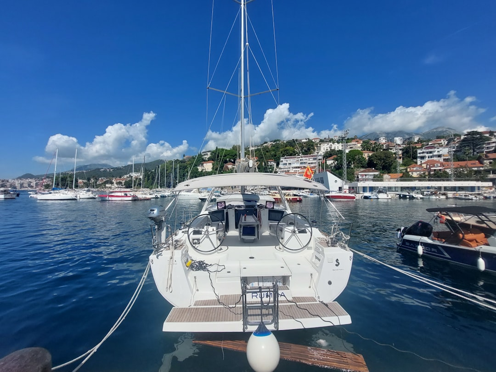
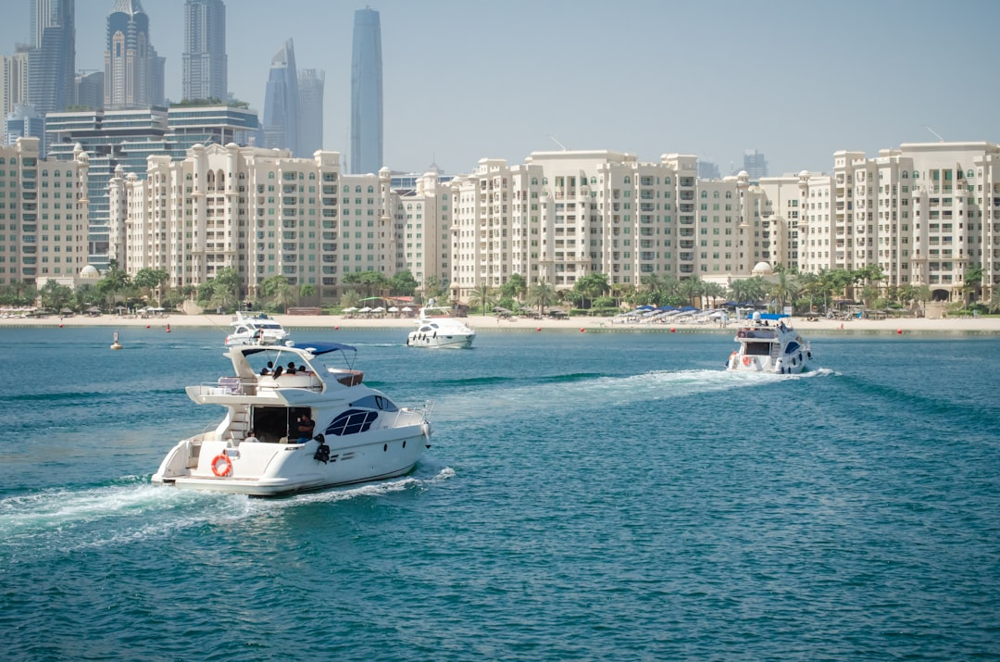
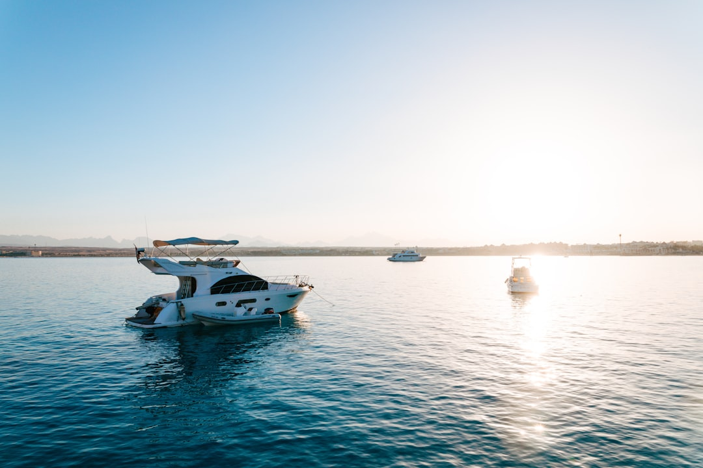

News
Formula 1 Abu Dhabi yacht charter
Formula 1 Abu Dhabi yacht charter
Types of yachts available for charter during the Abu Dhabi Grand Prix
Amenities and services provided on luxury yachts
Comparison of yacht sizes and capacities
Viewing Experience
Viewing Experience
Prime locations for yacht mooring to view the race
Onboard entertainment options during the event
Exclusive access and hospitality packages
Charter Process
Charter Process
Steps to book a yacht charter for the Abu Dhabi Grand Prix
Costs and pricing structures involved in yacht charters
Legal requirements and documentation needed for chartering a yacht
Contact Us
What is the best way to charter a yacht for the Abu Dhabi Grand Prix?
Oct 09, 2024
Chartering a yacht for the Abu Dhabi Grand Prix is an experience that combines luxury, thrill, and exclusivity.. The Grand Prix, held at the Yas Marina Circuit, is one of the most anticipated events in the world of Formula One racing.
What is included in an Abu Dhabi Formula 1 yacht charter package?
Oct 09, 2024
An Abu Dhabi Formula 1 yacht charter package offers a unique blend of luxury, excitement, and exclusivity that appeals to motorsport enthusiasts and aficionados of opulence alike.. Perched on the glistening waters of the Arabian Gulf, this experience combines the thrill of the Grand Prix with the serene elegance of yachting, making it an unforgettable adventure for those fortunate enough to partake. At its core, an Abu Dhabi Formula 1 yacht charter package is designed to provide guests with unparalleled views of the Yas Marina Circuit.
What is the cost of renting a yacht during the Formula 1 race in Abu Dhabi?
Oct 09, 2024
Renting a yacht during the Formula 1 race in Abu Dhabi is an experience that combines luxury, exhilaration, and exclusivity.. The Abu Dhabi Grand Prix, held at the Yas Marina Circuit, is one of the most prestigious events on the F1 calendar.

What is the experience like on a luxury yacht during the Abu Dhabi F1 weekend?
Oct 09, 2024
Experiencing the Abu Dhabi Formula 1 weekend on a luxury yacht is truly a once-in-a-lifetime adventure that combines the thrill of high-speed racing with the opulence of exclusive maritime living.. As you step aboard the gleaming vessel, moored in Yas Marina with its sleek lines and polished decks, you immediately sense that this is no ordinary getaway. The atmosphere on a luxury yacht during this prestigious event is electric yet refined.
What is required to book a yacht for the Formula 1 event in Abu Dhabi?
Oct 09, 2024
Booking a yacht for the Formula 1 event in Abu Dhabi is an experience that combines the thrill of high-speed racing with the luxury and opulence of nautical living.. This prestigious event, held annually at the Yas Marina Circuit, draws thousands of motorsport enthusiasts from around the globe.
What is the availability of yachts during the Abu Dhabi Grand Prix season?
Oct 09, 2024
The Abu Dhabi Grand Prix is an exhilarating event that draws motorsport enthusiasts from all over the globe to the dazzling cityscape of Abu Dhabi.. As the Formula 1 season reaches its thrilling conclusion, fans and spectators flood into this vibrant capital of the United Arab Emirates, eager to experience the high-speed action and opulent hospitality.

What is the most popular yacht charter option for Formula 1 fans in Abu Dhabi?
Oct 09, 2024
The allure of Formula 1 transcends mere automotive fascination; it is a celebration of speed, technology, and human ingenuity.. Among the many destinations on the F1 calendar, Abu Dhabi stands out not only for its stunning Yas Marina Circuit but also for its opulent lifestyle offerings that attract enthusiasts from across the globe.
How to Experience Formula 1 Abu Dhabi Like a VIP with a Yacht Charter
Oct 09, 2024
Experiencing the Formula 1 Abu Dhabi Grand Prix is a thrilling adventure, but doing so like a VIP with a yacht charter elevates the experience to an entirely new level of luxury and excitement.. Nestled on Yas Island, the Yas Marina Circuit is known not only for its challenging track but also for its stunning waterfront views.

How to Turn Your Abu Dhabi Grand Prix Weekend into a Luxury Yacht Adventure
Oct 09, 2024
The Abu Dhabi Grand Prix is not just a race; it's an experience that combines the thrilling world of Formula 1 with the opulence and luxury synonymous with this vibrant city.. For those looking to elevate their race weekend, turning it into a luxury yacht adventure is the ultimate way to blend excitement with indulgence.
How to Get Front-Row Seats at the Abu Dhabi Grand Prix on a Private Yacht
Oct 09, 2024
There's something undeniably exhilarating about the roar of engines and the intoxicating scent of burning rubber at a Formula 1 race.. The Abu Dhabi Grand Prix, held at the iconic Yas Marina Circuit, is no exception.
How to Elevate Your Formula 1 Experience with an Exclusive Abu Dhabi Yacht Charter
Oct 09, 2024
Every Formula 1 enthusiast knows that the Abu Dhabi Grand Prix is not just a race; it's an extravaganza of speed, skill, and spectacle.. As the final showdown of the F1 season, it promises high-stakes drama and adrenaline-pumping action set against the stunning backdrop of Yas Marina Circuit.
How to Enjoy the Thrill of Formula 1 in Abu Dhabi from the Comfort of a Yacht
Oct 09, 2024
The adrenaline-infused world of Formula 1 racing is a spectacle that enthralls millions around the globe.. With its high-speed chases, dramatic overtakes, and the sheer roar of engines, it offers an experience like no other.
How to Discover the Hidden Luxuries of F1 Yas Marina Circuit by Yacht
Oct 09, 2024
The Yas Marina Circuit in Abu Dhabi is synonymous with glitz, glamour, and high-octane racing.. Nestled on Yas Island, this state-of-the-art track is not just a venue for Formula 1 enthusiasts but also a playground for luxury seekers.
How to Make Unforgettable Memories at the Abu Dhabi Grand Prix with a Yacht Rental
Oct 09, 2024
Creating unforgettable memories at the Abu Dhabi Grand Prix with a yacht rental is not merely about witnessing a sporting event; it's about experiencing the epitome of luxury, thrill, and breathtaking views all in one remarkable package.. The Abu Dhabi Grand Prix stands as a pinnacle of motorsport events, and when combined with the elegance of a yacht rental, it becomes an unparalleled adventure that etches itself into your memory forever. Imagine arriving in the vibrant city of Abu Dhabi, where modernity meets tradition.
The Ultimate Luxury Experience: Chartering a Yacht for the Abu Dhabi Grand Prix
Oct 09, 2024
The Abu Dhabi Grand Prix, a jewel in the crown of Formula 1 racing, embodies speed, precision, and luxury on a grand scale.. As engines roar and tires screech across the Yas Marina Circuit's tarmac, an unparalleled spectacle unfolds.
Viewing the Race from the Water: Best Spots to Anchor Your Yacht in Abu Dhabi
Oct 09, 2024
Viewing the Race from the Water: Best Spots to Anchor Your Yacht in Abu Dhabi Abu Dhabi, with its stunning coastline and azure waters, presents an unrivaled opportunity for yacht owners who wish to experience the thrill of a race from the comfort of their own vessel.. The city, known for its opulence and penchant for hosting world-class events, provides an array of ideal anchor points that let you witness the adrenaline-pumping action while basking in luxury. As you prepare your yacht for this extraordinary experience, consider these prime locations within Abu Dhabi’s waters to ensure you have front-row seats to all the excitement without missing any pivotal moments. Firstly, Yas Marina should be at the top of your list.
Comparing Yacht Charter Packages for the Abu Dhabi Formula 1 Weekend
Oct 09, 2024
The Abu Dhabi Formula 1 Grand Prix is a spectacular event that draws motorsport enthusiasts, celebrities, and luxury seekers from all corners of the globe.. Against the breathtaking backdrop of Yas Marina Circuit, the race is as much about the glamour and opulence as it is about speed and competition.
Exclusive Events and Parties on Yachts during the Abu Dhabi Grand Prix
Oct 09, 2024
The Abu Dhabi Grand Prix is not merely a race; it is an exhilarating spectacle that draws the world's elite to the heart of the United Arab Emirates.. Amidst the roaring engines and vibrant lights of Yas Marina Circuit, a unique subculture thrives—exclusive events and parties on luxurious yachts.
How to Book a Last-Minute Yacht Charter for the F1 Race in Abu Dhabi
Oct 09, 2024
Booking a last-minute yacht charter for the F1 race in Abu Dhabi can be an exhilarating experience, offering an unmatched view of the thrilling event while enjoying the luxury and comfort of being on the water.. While it might seem daunting at first, especially considering the high demand during such a prestigious event, with careful planning and a bit of insider knowledge, you can secure your spot on one of these floating palaces. First and foremost, understanding why the Abu Dhabi Grand Prix is so special is essential.
Top Amenities to Expect on a Luxury Yacht During the Abu Dhabi GP
Oct 09, 2024
Attending the Abu Dhabi Grand Prix is an exhilarating experience, marked by the thrilling roar of high-speed engines and the luxurious allure of one of Formula 1’s most glamorous races.. But to elevate this experience even further, many choose to witness the spectacle from a luxury yacht positioned perfectly in Yas Marina.